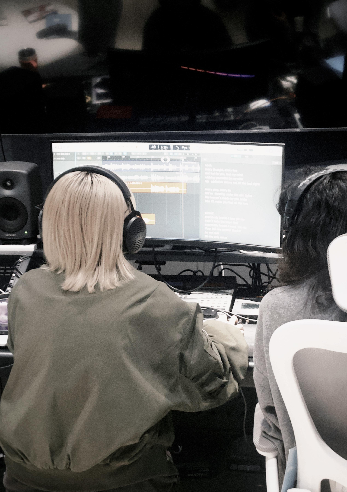

Uin (尤因 / 유인) is an electronic hip-hop producer, DJ and songwriter active between Shanghai and Seoul. Grounded in club culture and driven by cross-genre curiosity, her sound bridges electronic, hip-hop, R&B and K-POP — forged across two cities, three languages, one relentless sonic identity.
